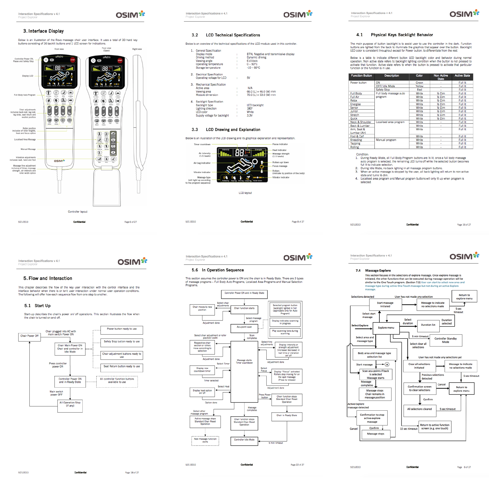

I documented all information related to the interaction and user experience design into a document that became the standard reference for all future product designs. In addition, the engineering and quality assurance teams began using this specification when developing and testing new products.
To better communicate the design intent and interaction behavior, I collaborated with an external vendor to produce an interactive flash prototype. This prototype allowed me to more easily present the UX platform to stakeholders, partners, and developers.